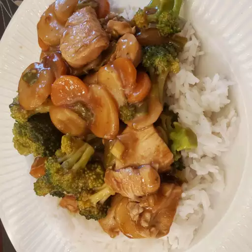

Best Chicken

This tasty kung pao chicken is similar to what is
served in Chinese restaurants. It's easy to make, and
you can be as creative with the measurements as you
want. You can't go wrong! The sauce reduces until nice
and thick.
Ingredients
- cornstarch
- white wine
- soy sauce
- sesame oil
- chicken breast
- hot chile paste
- brown sugar
- white vinegar
- water chestnuts
- peanuts
- green onions
- garlic
Steps
- Combine water and cornstarch in a cup, set
aside.
- Combine 1 tablespoon wine, 1 tablespoon soy
sauce, 1 tablespoon sesame oil, and 1
tablespoon cornstarch/water mixture in a large
glass bowl. Add chicken pieces and toss to
coat. Cover the dish and refrigerate for about
30 minutes.
- Combine remaining 1 tablespoon wine, 1
tablespoon soy sauce, 1 tablespoon sesame oil,
and remaining cornstarch/water mixture in a
medium bowl. Whisk in chile paste, brown sugar,
and vinegar. Add water chestnuts, peanuts,
green onions, and garlic and toss to coat.
- Transfer water chestnut mixture to a medium
skillet. Heat slowly over medium heat until
aromatic.
- Meanwhile, transfer chicken from marinade into
a large skillet; cook over medium-high heat,
stirring, until chicken is cooked through and
juices run clear.
- Combine water chestnut mixture and sautéed
chicken together in one skillet. Adjust heat
and simmer together until sauce thickens.
Back to home